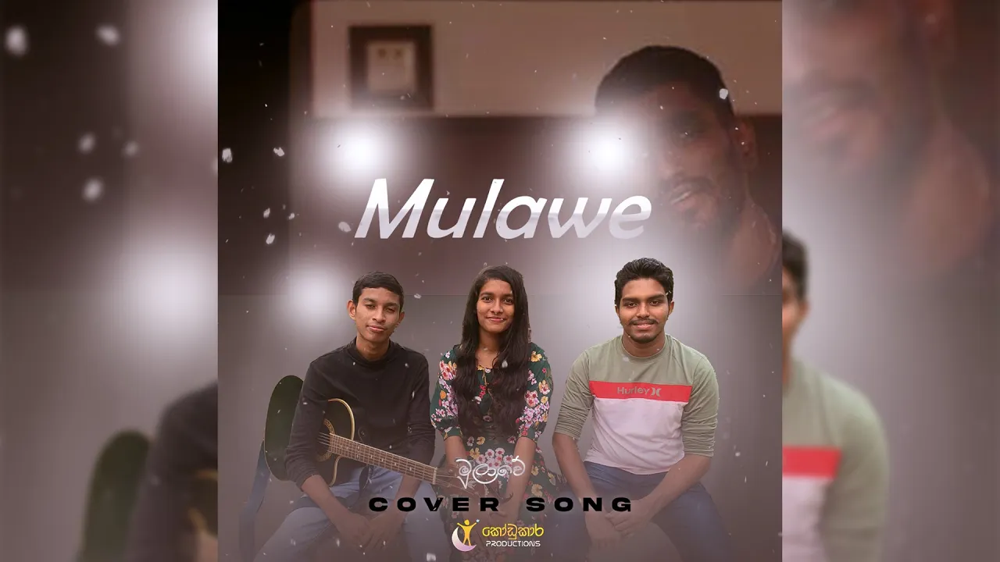

Kodukara Productions - Sri Lanka
About
Kodukara Productions is a YouTube Channel in Sri Lanka based creative media production brand dedicated to developing high-quality audio-visual content. The production focuses on music, storytelling, and visual creativity, combining artistic expression with modern digital techniques. Through original productions and creative collaborations, Kodukara Productions aims to showcase local talent while contributing to the growth of contemporary Sri Lankan digital media and creative arts.
Featured Songs
Originals
-
Niwarthana

-
Nagachchathi

-
Obado Agana

-
Sasara Pathana Kumariye

Cover Songs
-
Dekopul Kandulin Thema

-
Danena Thuru Ma

-
Datha Dara

-
Nura Wasanthe

-
Mulawe
